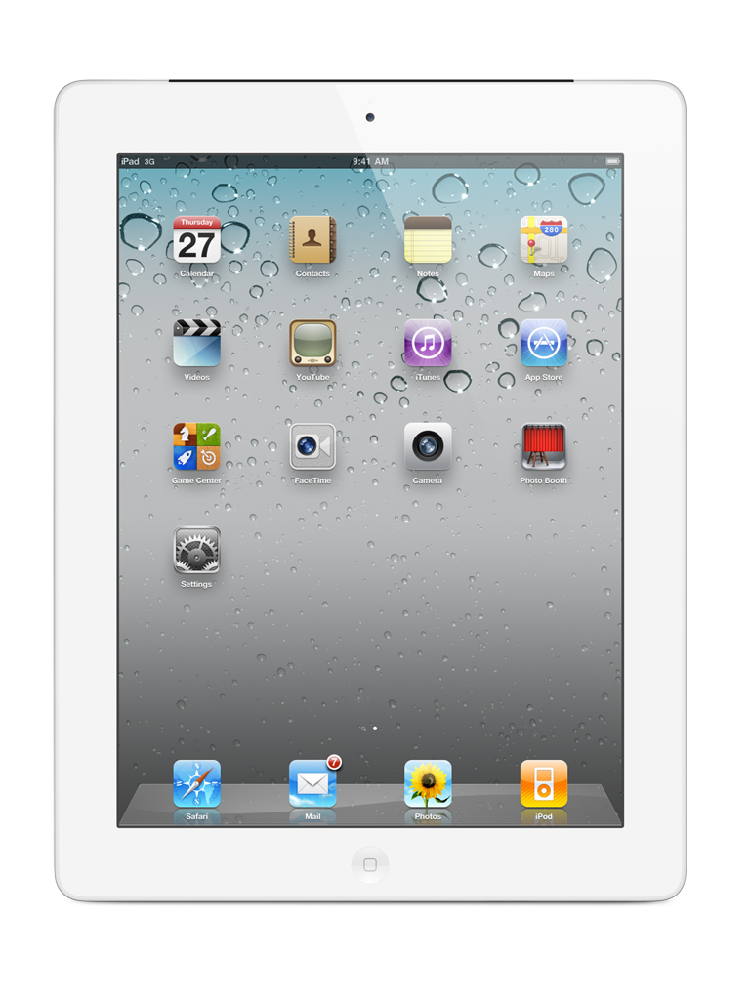

Tablets
Samsung Galaxy

Ipad 2
Apple's iPad 2 is an easy tablet to review is somewhat of an understatement. The device, a follow up to last year's wildly successful (and currently market-defining) iPad, is nearly identical when it comes to software, and though improved, closely related on the hardware side as well. With a 9.7-inch, 1024 x 768 display, the general size and shape of the device has remained the same, and though inside there's a new dual core A5 CPU, more memory, and a pair of new cameras, most of the iPad 2's changes are cosmetic. Still, the previous tablet soared far above most of its competitors when it came to the quality of both the hardware (if not its raw specs) and its software selection -- something Apple still stands head and shoulders over its adversaries on. So this new model, a thinner, sleeker, faster variant of the original may not be breaking lots of new ground, but it's already at the front of the pack. But is the iPad 2 worth an upgrade for those that took the plunge on the first generation? More importantly, does the device have what it takes to bring new owners into the fold? Those questions -- and more -- are all about to be answered in the full Engadget review, so read on!